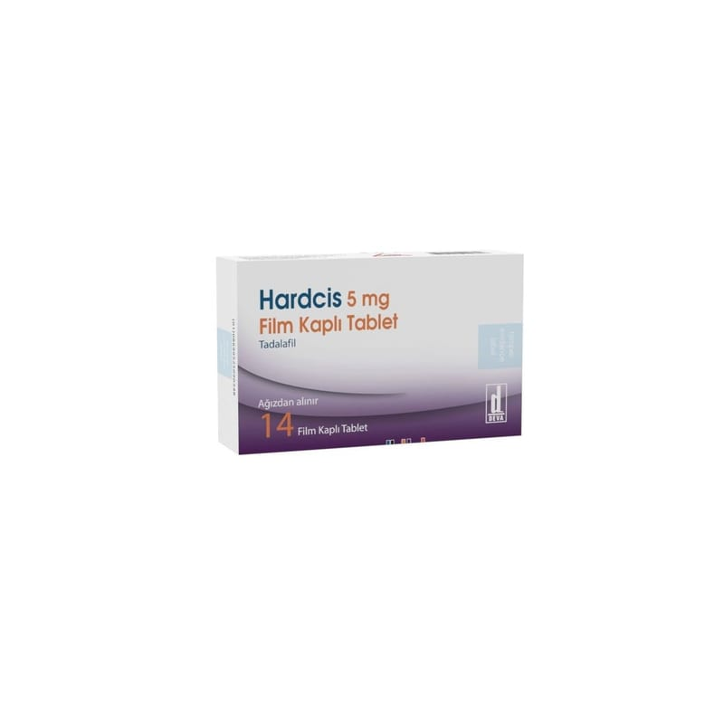

Hardcis 5 mg Film Kaplı Tablet, 14 Adet

Ne için kullanılır
KT · Bölüm 1HARDCİS 5 mg, sarı renkli, badem şeklinde film kaplı tablettir. 14 veya 28 tabletlik blister ambalajlarda kullanıma sunulmuştur.
HARDCİS, fosfodiesteraz tip 5 inhibitörleri olarak adlandırılan ilaç grubuna dahildir.
HARDCİS 5 mg yetişkin erkeklerde aşağıdaki hastalıkların tedavisinde kullanılır: Erektil disfonksiyon, cinsel aktivite için gerekli penis sertleşmesinin sağlanamaması veya sertliğin korunamaması durumudur. HARDCİS’in cinsel aktivite için uygun penis sertleşmesinin sağlanması yeteneğini önemli ölçüde geliştirdiği gösterilmiştir. Cinsel uyarıyı takiben HARDCİS, penis içerisindeki kan damarlarının gevşemesine yardımcı olarak kanın penis içerisine akışını sağlar. Bunun sonucunda peniste sertleşme gerçekleşir. Eğer sertleşme sorununuz yoksa HARDCİS yardımcı olmayacaktır.
Cinsel uyarının olmadığı durumlarda HARDCİS’in tek başına işe yaramayacağı önemle göz önünde bulundurulmalıdır. Bu nedenle sizin ve partnerinizin, sertleşme sorunu tedavisi için ilaç almıyormuş gibi, ön cinsel aktivitede bulunması gerekmektedir.
İyi huylu prostat büyümesine (benign prostat hiperplazisi) bağlı alt idrar yolları bulguları, prostatın yaşla birlikte büyüyerek, idrar yapmaya başlamada zorlanma, idrar torbasının tam boşalamaması ve daha sık olarak hatta gece bile idrara çıkma gerekliliği şeklinde tanımlanabilen bir durumdur. HARDCİS, kan akımını artırarak, prostat ve mesane kaslarını gevşeterek benign prostat hiperplazisinin semptomlarını azaltabilir. Tedaviye başladıktan sonra HARDCİS’in 2 hafta içinde üriner semptomlarda düzelme sağlamaya başladığı gösterilmiştir.